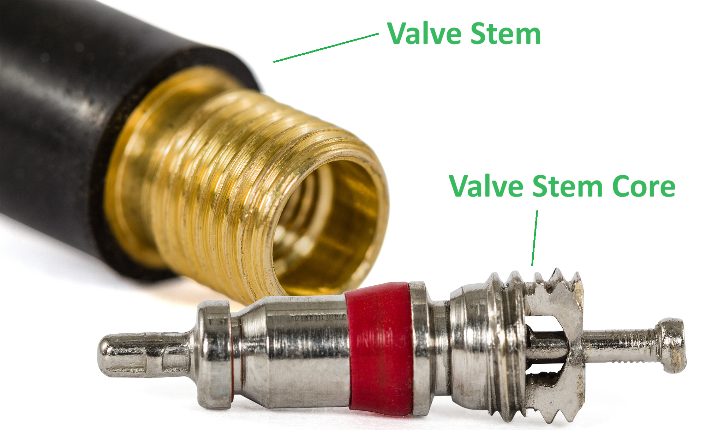

Step 1: Gather Tools and Equipment
Step 2: Finding Recommended Tire Pressure
Step 3: Checking Tire Pressure
Step 4: (If necessary) Adjusting Tire Pressure
Checking tire pressure is a relatively simple process. The only tool you need is a tire pressure gauge.
Most cars have a sticker on the driver-side door jam with the recommended tire pressure.
Note: The recommended pressure listed is for a "cold" tire. In addition, tire pressure between the front and back could differ depending on your car.
Now that you have the target tire pressure in mind remove the valve stem cap and press your gauge against the valve stem. Make sure you are pressing your gauge steadily and straight. Holding your gauge at an incorrect angle will throw your readings off and cause your tire to hiss. Determine whether your tire needs more or less air. If your tire pressure is too high, go to step 4a. If too low, go to step 4b.
Note: If you have checked your tire pressure after recently driving your car, STOP NOW! Your reading might have been high as your tire warmed up and increased the pressure. Recheck your measurements in a couple of hours.
To decrease tire pressure, press the plunger on the valve stem core (See the picture below for details).
Most tire pressure gauges have a built-in tool to help you do this. However, you can do this with any slender object. You want to deflate the tire in short intervals. Tire pressure can reduce several PSIs in a matter of seconds. Check your pressure between every interval until you reach the desired PSI, then install your valve stem cap. You're all set! Now, repeat for the rest of your tires.
Increasing tire pressure is more involved than decreasing tire pressure. First, you need to locate a tire compressor. You can find these at gas stations or buy a portable one and leave it in your trunk. You need to inflate your tire in intervals while checking tire pressure between every interval. Repeat this until you reach your target tire pressure, then install your valve stem cap. You're all set! Now, repeat for the rest of your tires as necessary.